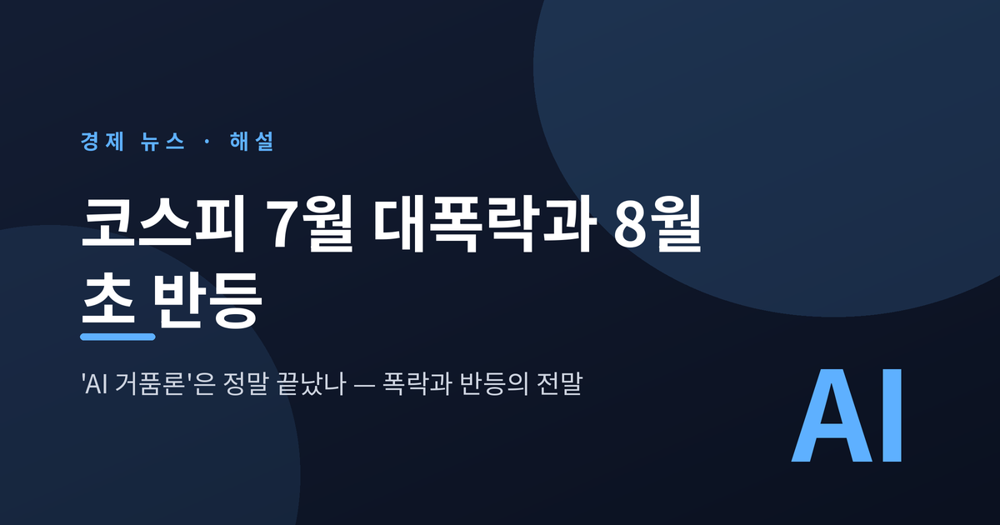
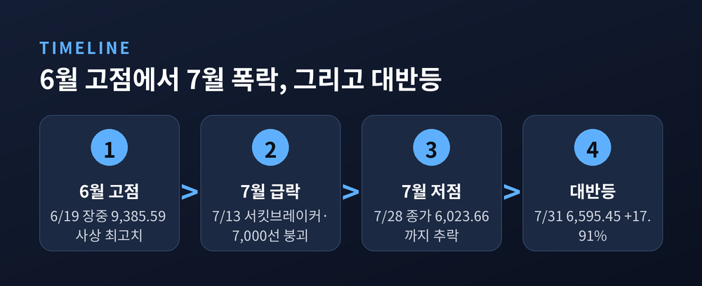
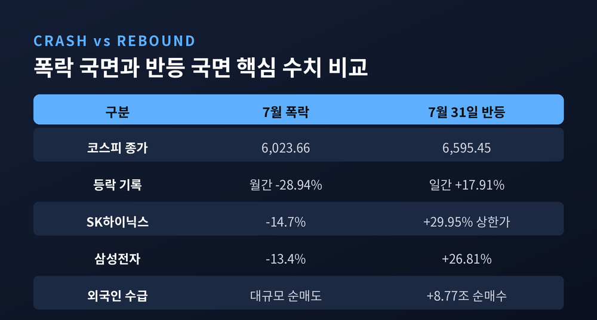
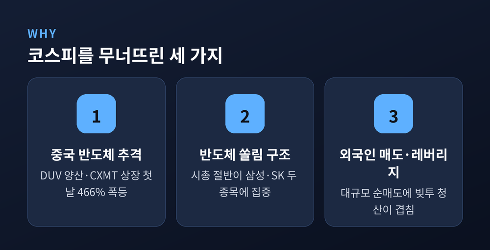
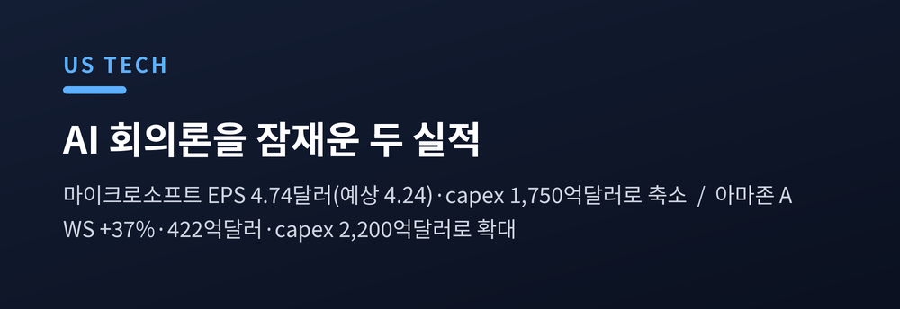
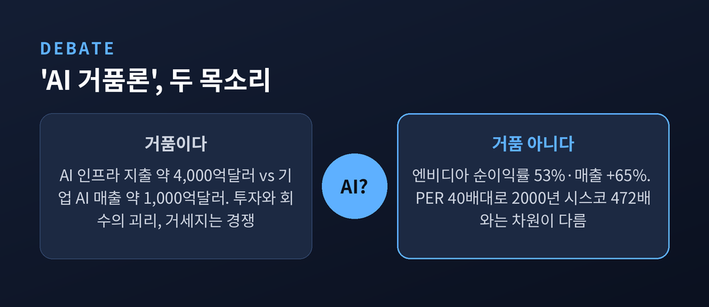

이번 글에서는 2026년 7월 코스피가 겪은 역대급 폭락과, 그 직후 하루 만에 벌어진 사상 최대 반등을 정리해 보겠습니다. 무슨 일이 있었는지부터 그 배경과 'AI 거품론' 논쟁까지 차근차근 짚어 보겠습니다.
이 글은 사건을 정리하고 이해를 돕기 위한 정보 제공용이며, 특정 종목이나 투자를 권유하는 글이 아닙니다. 투자 판단과 그 책임은 오롯이 투자자 본인에게 있습니다.

시작은 6월이었습니다. 코스피는 6월 19일 장중 9,385.59까지 올라 사상 최고치를 찍었습니다.
그리고 무너졌습니다. 6월 말 8,476.48이던 지수는 7월 28일 6,023.66까지 밀렸습니다. 7월 한 달 낙폭만 약 28.94%. 6월 고점과 비교하면 33%가 넘게 증발했습니다.
이 수치가 왜 무서운지 짚어 두겠습니다. 1997년 외환위기 때도, 2008년 글로벌 금융위기 때도 월간 하락률이 이 정도는 아니었습니다. 코스피 역사상 최악의 한 달이었던 셈입니다.
과정도 험했습니다. 7월 13일에는 지수가 8.95% 급락하며 서킷브레이커가 걸렸습니다. SK하이닉스 주가는 200만 원선이 깨졌고, 지수는 7,000선으로 주저앉았습니다. 폭락이 정점에 이른 날 삼성전자는 13.4%, SK하이닉스는 14.7% 떨어졌습니다.
시장에는 '코리아 디스카운트가 아니라 코리아 붕괴'라는 자조가 돌았습니다.

바닥은 예고 없이 방향을 틀었습니다.
7월 31일, 코스피는 전 거래일보다 1,001.89포인트, 무려 17.91% 오른 6,595.45로 마감했습니다. 상승률도, 상승폭도 코스피 역사상 처음 보는 기록입니다. 종전 상승률 기록이 2008년 10월의 11.95%였으니, 얼마나 이례적인 하루였는지 짐작이 갑니다.
코스닥도 11.63% 뛰어 719.76에 마감했습니다.
개장 직후부터 매수세가 몰렸습니다. 올해 들어 21번째 매수 사이드카가 걸렸고, 반도체 대형주가 지수를 끌어올렸습니다. SK하이닉스는 29.95% 상한가로 '170만닉스'를 회복했습니다. 가격제한폭이 30%로 바뀐 2015년 6월 이후 첫 상한가였습니다. 삼성전자도 26.81% 급등했습니다.
수급은 완전히 뒤집혔습니다. 외국인은 하루에만 8조 7,709억 원을 순매수하며 역대 최대 기록을 세웠습니다. 그중 SK하이닉스 한 종목만 3조 5,883억 원어치를 담았습니다.
반면 공포에 질렸던 개인은 10조 원 넘게 팔았습니다. 이 역시 역대 최대 순매도입니다. 예전엔 개미가 사고 외국인이 팔았습니다. 이날은 정반대였습니다.

폭락의 방아쇠는 반도체였습니다.
발단은 중국이었습니다. 중국이 DUV 노광장비를 양산한다는 소식이 전해졌습니다. 반도체 경쟁이 빨라진다는 공포였습니다. 여기에 중국 메모리업체 CXMT가 상하이 증시 데뷔 첫날 466%나 폭등하면서, 중국의 '메모리 굴기'에 대한 불안이 커졌습니다.
문제는 우리 증시의 구조였습니다. 코스피 시가총액의 절반 이상이 삼성전자와 SK하이닉스, 단 두 종목에 쏠려 있습니다. 반도체가 흔들리면 지수 전체가 휘청일 수밖에 없는 몸입니다.
외국인은 이 틈에 SK하이닉스를 중심으로 대규모 매도에 나섰습니다. 여기에 과도한 레버리지, 즉 빚을 낸 투자가 얹히면서 하락이 하락을 부르는 악순환이 벌어졌습니다.
바깥의 시선도 곱지 않았습니다. 일부 외신은 이번 폭락을 두고 'AI 버블 붕괴의 신호', 심지어 '나스닥 폭락의 전조'라고 표현했습니다.

그렇다면 무엇이 시장을 되돌렸을까요. 답은 국내가 아니라 미국에 있었습니다.
7월 29일, 마이크로소프트가 성적표를 내놨습니다. 조정 주당순이익이 4.74달러로, 예상치 4.24달러를 크게 웃돌았습니다. 클라우드 사업 애저도 기대 이상이었습니다. 무엇보다 '365 코파일럿' 이용자가 급증하면서, 그동안 시장을 괴롭히던 'AI가 돈이 되긴 하느냐'는 의심이 한풀 꺾였습니다. 주가는 시간외에서 8% 뛰었습니다.
하루 뒤 아마존이 뒤를 이었습니다. 클라우드 사업 AWS 매출이 1년 전보다 37% 늘어난 422억 달러를 기록했습니다. 시장 예상치인 31%를 훌쩍 넘긴 데다, 2021년 이후 가장 빠른 성장세였습니다. 아마존 주가도 시간외에서 10% 넘게 올랐습니다.
흥미로운 대목이 있습니다. 마이크로소프트는 올해 투자 계획을 1,900억 달러에서 1,750억 달러로 줄였습니다. '수익성'을 챙기겠다는 신호입니다. 반대로 아마존은 2,000억 달러에서 2,200억 달러로 늘렸습니다. 'AI 수요는 계속된다'는 자신감입니다.
줄이는 쪽도, 늘리는 쪽도 시장을 안심시켰습니다. 이 두 실적이 간밤 필라델피아 반도체지수를 밀어 올렸고, 그 온기가 다음 날 아침 코스피로 옮겨붙었습니다.

이 질문에는 두 목소리가 팽팽합니다.
거품이 아니라는 쪽은 실적을 봅니다. 엔비디아는 순이익률이 53%에 이르고, 2026 회계연도 매출이 2,159억 달러로 1년 새 65% 늘었습니다. 밸류에이션도 닷컴 시절과는 결이 다릅니다. 엔비디아의 주가수익비율은 후행 기준 40배대인데, 2000년 정점의 시스코는 472배였습니다. 실체 없는 거품과는 다르다는 이야기입니다.
거품을 경계하는 쪽은 '괴리'를 봅니다. AI 인프라에 쏟아붓는 돈은 4,000억 달러 안팎인데, 실제 기업들이 AI로 버는 돈은 1,000억 달러 수준에 그칩니다. 투자와 회수 사이의 간극이 큽니다. 클라우드 기업들이 투자를 줄이거나 수익화 시점에 의문을 표하는 순간, 지금의 상승은 빠르게 되돌려질 수 있습니다. AMD가 엔비디아의 30% 안팎 가격으로 도전하는 등 경쟁도 거세지고 있습니다.
한계는 솔직히 인정해야겠습니다. 이번 반등이 추세의 전환인지, 아니면 잠깐의 반발인지는 아직 아무도 모릅니다. 한 외신은 하루 만에 널뛴 코스피를 두고 '증시의 조울증'이라 꼬집었습니다.
정리하면 이렇습니다.
7월의 폭락도, 7월 말의 반등도 모두 반도체와 AI라는 하나의 축을 중심으로 돌았습니다. 우리 증시가 그만큼 이 산업에 깊이 묶여 있다는 뜻이기도 합니다.
증권가는 8월을 조심스레 낙관합니다. 남은 미국 대형 기술주의 실적을 더 확인해야 하지만, 헤지펀드 청산으로 꼬였던 수급이 풀리는 조짐도 보입니다.
"거품이냐 아니냐를 가르는 것은 결국 실적이 투자를 따라잡느냐입니다."
숫자는 하루 만에 되돌릴 수 있어도, 그 질문에 대한 답은 몇 분기에 걸쳐 천천히 드러날 것입니다. 지금 우리가 목격한 것은 결론이 아니라, 그 답을 향해 가는 길목의 한 장면일지도 모릅니다.
